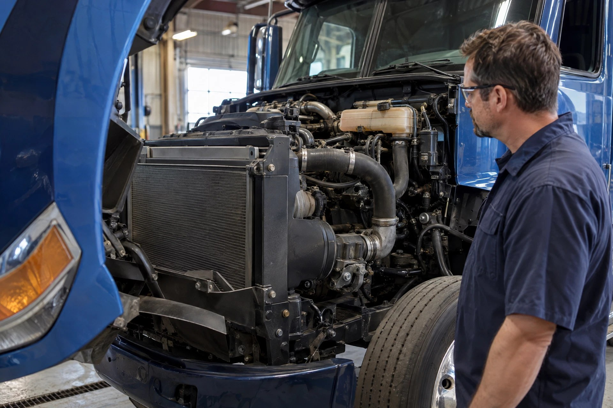

Cooling system: Illustrative system photography—not a location, fitment, or repair-procedure reference.
🌡️ COOLING DIAGNOSTICS
Cooling system: how the pieces connect
Moves heat out of the engine.
- 1
Coolant circulation
Coolant carries heat away from hot engine parts.
- 2
Temperature control
The thermostat helps regulate circulation as the engine warms.
- 3
Radiator + airflow
The radiator transfers heat to air; airflow matters too.
Separate a high-temperature complaint from missing coolant or fluid mixing. Never open a hot pressurized cooling system.
Which symptom matches your truck?
OverheatingOpen the focused symptom guide.Losing CoolantOpen the focused symptom guide.Coolant Pushing OutOpen the focused symptom guide.Temp Goes Up & DownOpen the focused symptom guide.Coolant in OilOpen the focused symptom guide.Oil in CoolantOpen the focused symptom guide.Radiator Hose HardOpen the focused symptom guide.Fan Won’t Turn OnOpen the focused symptom guide.Fan Stays OnOpen the focused symptom guide.
See how all truck systems connectFind manufacturer service information
Choose the complaint, then follow the heat-transfer or contamination path.
👀 DON'T KNOW THE PART? SEE THE COOLING PARTS VISUAL GUIDE →🔥 Overheating💧 Losing Coolant🌊 Coolant Pushing Out🌡️ Temp Goes Up & Down🥛 Coolant in Oil🛢️ Oil in Coolant🧱 Radiator Hose Hard🌬️ Fan Won’t Turn On🌀 Fan Stays On⚠️ Temp / Fan Code
1️⃣ COOLANT
Correct quantity and condition
Correct quantity and condition
↓
2️⃣ CIRCULATION
Pump, thermostat and passages
Pump, thermostat and passages
↓
3️⃣ ENGINE HEAT
Load and engine condition
Load and engine condition
↓
4️⃣ HEAT EXCHANGERS
Radiator / cooling stack
Radiator / cooling stack
↓
5️⃣ AIRFLOW / FAN
Heat leaves through airflow
Heat leaves through airflow
👇 Diagnose in the right order
🔥 OVERHEATING: Verify coolant, leakage, airflow, fan operation and circulation before deeper engine causes.
🌊 PUSHES COOLANT: Determine when it happens, verify true temperature, cap/fill/vent behavior and then measure abnormal pressure using OEM procedures.
🥛 COOLANT IN OIL: Stop operation if contamination is significant. Test oil/coolant interfaces such as the engine-specific cooler/housing before major internal disassembly.
🛢️ OIL IN COOLANT: Confirm contamination and test oil-to-coolant interfaces before condemning head/gasket components.
🧱 HARD HOSE: A hot system normally builds pressure. Diagnose whether pressure appears abnormally early or accompanies overheating/coolant loss; hose feel alone proves nothing.
🌡️ TEMP FLUCTUATES: Compare dash and scan data, then match the event to coolant level, thermostat/circulation, fan/airflow or sensor behavior.
🌬️ FAN COMPLAINTS: Separate commanded fan operation from fan mechanism failure and verify electrical/air supply and relevant inputs.
🧩 Related systems
DEFINE COMPLAINT → VERIFY TEMPERATURE / FLUID → FOLLOW COOLANT / CIRCULATION / AIRFLOW OR CONTAMINATION PATH → MEASURE → PROVE → REPAIR → VERIFY.
⚠️ Never open a hot pressurized cooling system. Follow current manufacturer procedures for cooling-system pressure tests, internal leak diagnosis, flushing, fan service and exact specifications.